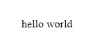
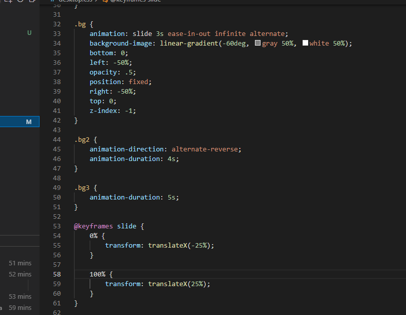

My Experience
At the beginning of this process, I had no clue how hard the task would be. In all honesty, I thought I would complete the website in a day however the first obstacle that I faced was finding a vision of what I wanted my website to look like. I found out the hard way that you can not put words on the screen and expect it to all fall into place it was about actively thinking about the next move I made. I would create a page and would constantly go back and revisit it trying to constantly improve my work. I was in a competition with myself on how to make the perfect website and came to the realisation that it reflects me, an imperfect beautiful mess. I was about to watch my vision grow before my very eyes and in the end, it broke me only to build me up again in my image (you know like how you break your code only to build a stronger website). This module has caused me to think outside the box and truly explore the wonders of my mind and create what you see today my imperfect beautiful mess that is perfect in my eyes.
My Ups
My greatest accomplishment on my website is my background, I spent hours working on the animation and getting the colour scheme to coincide with my favourite colour aqua. It filled me with a great sense of fulfilment when I was able to figure out the solution on my own and boosted my confidence towards finishing this assignment. Another great accomplishment of mine is the navigation transition on the mobile view. I had struggled to make the navigation slide into frame and when I finally discovered how to do it my morale was boosted to new heights and again gave me the confidence boost that I needed to push on further.
My Downs
One of my hardest challenges was adding the mobile navigation transition to the mobile page. I was stuck trying to get the transition to appear in frame since I had inverted mine from the exercises (the hamburger icon is on the right instead of the left). The background colour was not appearing, the navigation was going over the hamburger icon and the text was coming from the wrong direction. I kept on breaking my code and scouring the internet and YouTube for a solution. Once I found my answer, I was overjoyed that my code was working and that all my efforts went towards a functioning code. Another difficult part of my website was linking my portfolio page to my CSS pages. A small oversight on my part lead to hours of contemplating a functioning code and the issue being my miss-spelling of the word portfolio (I missed out the letter f), that was a really hard day for me to come to the fact that one letter could almost defeat me and from then on I utilised the autofill feature in Visual Studio. Another challenge that I ran into was adding the hover effect over the images on the portfolio page, but like the typo in the word portfolio, I was not going to let that defeat me either. I tested and broke my code many times to be left with the precious gem you see today which is now one of my favourite pages on my website (second only to the page about yours truly of course). Even though it made me want to give up I persevered and have a page that I am proud of to show.
Look back through the time
Friday 8th March 2022
I had just begun this page with only having "hello world". Unsure about what to do or what creative style I should go in.
Look back through the time
Monday 11th May 2022
Put my head down and created the colour scheme and background. I chose the colour aqua because that was similar to the hair colour I had at the start of the project. I think a nice accent colour to go with aqua is white but I want something more unique than just those plain solid colours.

Look back through the time
Friday 8th May 2022
Made the website fully functional with transitions and animations. It took me a couple more days after finding a background animation I liked to actually work but after that, I was able to use my lessons from creating that background into adding more animations on my other pages such as the fade-in between each page and the word bounce on my homepage.
Validation
Homepage
Portfolio Page
Blog Page
About Me Page
Contact Page
Report Page

Main CSS
Desktop CSS
Mobile CSS
References
- Background Animation - Sliding Diagonals Background Effect - https://www.sliderrevolution.com/resources/css-animated-background/
- Hover over image -found in portfolio page and blog page - https://makitweb.com/html-how-to-show-text-above-image-on-hover/
- Font Awesome Icons - found in the footer - https://fontawesome.com/
- Make a link look like a button - On the validation pages- Done by user MD SHAYON - https://stackoverflow.com/questions/710089/how-do-i-make-an-html-link-look-like-a-button